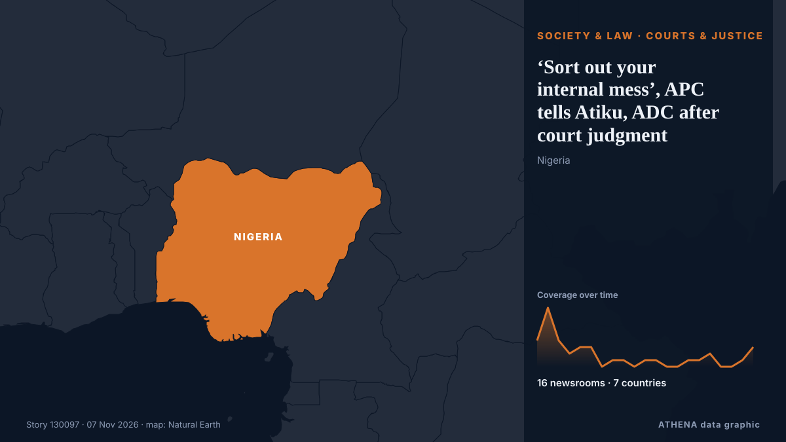

‘Sort out your internal mess’, APC tells Atiku, ADC after court judgment

APC has told the Senator David Mark-led faction of ADC to go sort out its internal mess and quit its “senseless rants” από Vanguard
Αναφέρθηκε ανεξάρτητα από 16 μέσα σε 7 χώρες από τις 5 Νοε, πρώτο το Punch· η κάλυψη εξαπλώνεται ακόμη. Το ATHENA εκτιμά τον κίνδυνο μέτριο (2.8/10), κυρίως λόγω της σοβαρότητάς του και της εμβέλειάς του. Βεβαιότητα 89% (υψηλή): το επιβεβαιώνουν 16 ανεξάρτητα μέσα, μέση αξιοπιστία 74%. Μέσα ανά χώρα: Νιγηρία (28), Τουρκία (1), Σαουδική Αραβία (1). Κάλυψη: 5 Νοε έως 7 Νοε, 42 ώρες.
Γιατί έχει σημασία: Οι νομικές αλλαγές και οι αλλαγές πολιτικής μεταβάλλουν δικαιώματα, υποχρεώσεις και δημόσιες υπηρεσίες για όσους αφορούν.
Τι άλλαξε: 10 νέες αναφορές από 6 μέσα στο 24ωρο έως 7 Νοε.
Πρώτη διατύπωση: Breaking: Court sacks Mark-led ADC Exco, voids Atiku’s candidacy
Οι τίτλοι των ειδήσεων παρουσιάζονται στα αγγλικά, όπως δημοσιεύτηκαν.
Με μια ματιά
Επιλέγεται, βαθμολογείται και γράφεται από τη δημοσιευμένη μεθοδολογία του ATHENA. Κανένας συντάκτης δεν παρεμβαίνει σε μεμονωμένα γεγονότα. Πώς παράγεται ›
| 05 Nov 10:07 UTC | 4 |
|---|---|
| 05 Nov 12:07 UTC | 9 |
| 05 Nov 14:07 UTC | 4 |
| 05 Nov 16:07 UTC | 2 |
| 05 Nov 18:07 UTC | 3 |
| 05 Nov 20:07 UTC | 3 |
| 05 Nov 22:07 UTC | 0 |
| 06 Nov 00:07 UTC | 1 |
| 06 Nov 02:07 UTC | 1 |
| 06 Nov 04:07 UTC | 0 |
| 06 Nov 06:07 UTC | 1 |
| 06 Nov 08:07 UTC | 1 |
| 06 Nov 10:07 UTC | 0 |
| 06 Nov 12:07 UTC | 0 |
| 06 Nov 14:07 UTC | 1 |
| 06 Nov 16:07 UTC | 1 |
| 06 Nov 18:07 UTC | 2 |
| 06 Nov 20:07 UTC | 0 |
| 06 Nov 22:07 UTC | 0 |
| 07 Nov 00:07 UTC | 1 |
| 07 Nov 02:07 UTC | 3 |
| 05 Nov 10:49 UTC | 0.0 |
|---|---|
| 05 Nov 14:37 UTC | 1.6 |
| 07 Nov 05:15 UTC | 2.8 |
| 07 Nov 05:15 UTC | 2.8 |
Γιατί αυτοί οι αριθμοί
Σημασία
Κίνδυνος
Βεβαιότητα
Η κάλυψη — ποιος το ανέφερε και πότε
ο τίτλος όπως δημοσιεύτηκε · ανοίγει το πρωτότυπο- Punch · ΝιγηρίαCourt sacks Mark-led ADC NWC, nullifies Atiku’s candidacy
- Vanguard · ΝιγηρίαCourt sacks Mark-led ADC exco, voids Atiku’s candidacy
- Daily Trust · ΝιγηρίαCourt sacks David Mark, voids Atiku’s candidacy
- Premium Times · ΝιγηρίαUPDATED: Court nullifies Atiku’s candidacy, sacks all ADC candidates, party leadership
- Anadolu Agency (English) · ΤουρκίαNigerian court nullifies Atiku’s presidential candidacy, deepening opposition crisis ahead of 2027 vote
- AllAfrica · AFRNigeria: Court Nullifies Atiku's Candidacy, Sacks All ADC Candidates, Party Leadership
- Daily Trust · ΝιγηρίαDon’t play with fire, ADC warns APC over court ruling
- Daily Trust · Νιγηρία‘No shaking’, Atiku shrugs off court ruling on candidacy
- Vanguard · ΝιγηρίαCourt ruling: Don’t set Nigeria on fire over 2027 – ADC to APC
- Channels TV · ΝιγηρίαADC Rejects Judgment Voiding Atiku’s Candidacy, Accuses APC Of Desperation To Cripple Opposition
- Premium Times · ΝιγηρίαADC rejects judgement sacking Mark, Atiku, blames APC
- ThisDay (Nigeria) · ΝιγηρίαAtiku Reacts to Court Judgement, Accuses APC of Plotting to Weaken ADC, Frustrate His Candidacy
- Punch · ΝιγηρίαADC rejects ruling nullifying Atiku’s candidacy, vows appeal
- Punch · ΝιγηρίαAtiku vows to appeal judgment nullifying Mark-led ADC leadership
- Arab News · Σαουδική ΑραβίαNigeria court strikes down candidacy of opposition leader Abubakar: party
- The Straits Times · ΣιγκαπούρηNigerian court voids candidacy of opposition ADC's Atiku for 2027 election
- ABC News (International) · Ηνωμένες ΠολιτείεςNigerian court nullifies presidential contender’s candidacy 2 months before election
- Channels TV · ΝιγηρίαAtiku Takes Presidential Campaign To Kebbi, Pledges To Restore Fuel Subsidy
- Africanews (English) · AFRNigerian court nullifies Atiku Abubakar's presidential candidacy
- The Rio Times · ΒραζιλίαNigeria Court Voids Opposition Leader’s Bid
- News Agency of Nigeria · ΝιγηρίαCourt judgment against ADC leadership politically-motivated – Atiku
- Premium Times · ΝιγηρίαAtiku vows to appeal court judgement against his candidacy, seeks stay of execution
- Punch · ΝιγηρίαADC factional chair Bala hails court ruling nullifying Atiku’s candidacy
- Channels TV · ΝιγηρίαADC Court Ruling: ‘APC Afraid Of Strong Candidate Against Tinubu’ – Osunbor
- MyJoyOnline · ΓκάναWill Atiku Abubakar be on Nigeria’s presidential ballot after court ruling?
- Vanguard · ΝιγηρίαAtiku Verdict: APC wants opposition fighting – Ameh
- BusinessDay (Nigeria) · ΝιγηρίαOpposition in prolonged legal battle as court sacks Atiku
- Africanews (English) · AFRAtiku’s candidacy in doubt after Nigerian court ruling
- Vanguard · ΝιγηρίαNigerian newspapers review: [2027] Court sacks Mark-led ADC exco, voids Atiku’s candidacy
- Vanguard · Νιγηρία‘Stop your rants, go sort your mess’ — APC tackles ADC over court ruling
- BusinessDay (Nigeria) · ΝιγηρίαCourt ruling will not stop my 2027 bid, Atiku vows
- Premium Times · ΝιγηρίαAPC accuses Atiku of hijacking ADC, tells party to resolve leadership crisis
- Premium Times · Νιγηρία10 key things to know about Justice Lifu’s judgment affecting ADC, Atiku, By Abdulrahman Abdulaziz
- Punch · ΝιγηρίαAPC to ADC: Tackle your party’s crisis
- Vanguard · ΝιγηρίαADC Crisis: What becomes of Atiku, Mark, Gombe if Supreme Court decides party’s fate?
- ThisDay (Nigeria) · ΝιγηρίαAtiku: Nothing Will Keep Me Off 2027 Ballot, ADC Heads to Appeal Court
- Vanguard · Νιγηρία‘Sort out your internal mess’, APC tells Atiku, ADC after court judgment